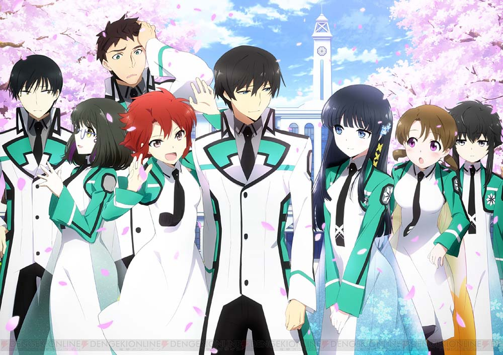
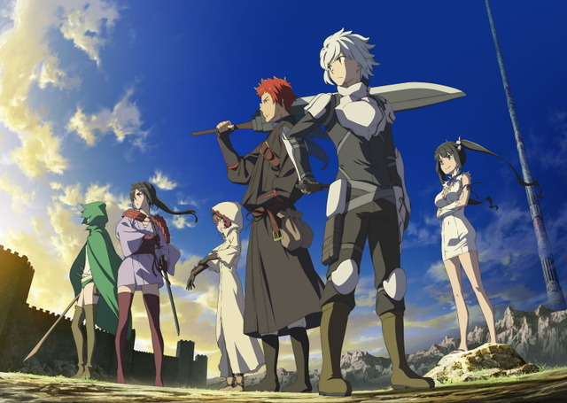
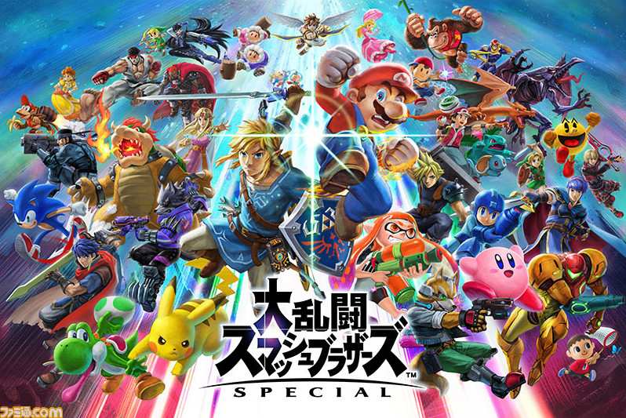

my hobby
好きなラノベ・その1
魔法科高校の劣等生
 これは初めはアニメで知った作品で、続編が知りたくて原作の小説を買い結局最終巻まで買い続けました。十二月までアニメもやっており、そちらもとても面白かったです。現在は、外伝と主人公が高校を卒業後の違う題名の続編があり全巻揃えています。また、映画化もしており、映画も面白く何度も見てしまうほどでした。ゲーム化の情報もあり楽しみでなりません。
好きなラノベ・その2
ダンジョンに出会いを求めるのは間違っているだろうか
 私が小説を読み始めるようになったきっかけの作品です。これも最初はアニメで知り、続きが知りたくてこの作品の小説を買ったのが私の買う最初の小説でした。これもアニメ化、映画化しておりどちらもとても面白かったです。これは魔法科高校の劣等生よりも、内容が重いシーンが多く、私としてはもう少し軽くしてほしいところです。現在もまだ続いており、続きを楽しみに待っている状態です。
好きなPS4ゲーム
好きなアプリゲーム
好きな任天堂ゲーム 
好きなラノベ
欲しいゲーム
好きな漫画
好きなアニメ
欲しいグッズ
作成者:大杉晃輝 更新日:2021/1/28